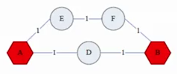
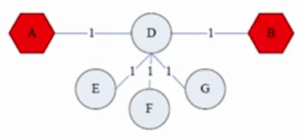
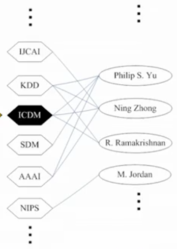

Notes from Mining Massive Datasets (Coursera & Stanford, 2014). Jure Leskovec, Anand Rajaraman, Jeff Ullman.
Often with a graph, you want to rank the nodes in some way. A common approach is to rank the nodes by the link (edge) structure. Link analysis provides some approaches for computing these node importance scores.
PageRank
The Flow Formulation
Think of links as votes - a node with more links is more important. In-links are preferable here because they are harder to fake than out-links.
We want to weight in-links based on where they are coming from (e.g. in-links from more important nodes should have higher weight).
So we have a recursive approach:
Each link's vote is proportional to the importance of its source node
If node $j$ with importance (rank) $r_j$ has $n$ out-links, each link gets $\frac{r_j}{n}$ votes
Node $j$'s won importance is the sum of the votes on its in-links
We add an additional constraint that the ranks must sum to 1 (so the solutions aren't unbounded)
Another way of formulating this is that:
$$
r_j = \sum_{i \to j} \frac{r_i}{d_i}
$$
That is, the rank of node $j$ is equal to the sum of the ranks $r_i$ over their out degree $d_i$ of all nodes linking to $j$.
If we consider this rank for every node of $j$ we get a system of "flow" equations which we can solve.
However this won't scale to large networks.
The Matrix Formulation
We define a stochastic adjacency matrix$M$. Say node $i$ has $d_i$ out-links. If $i \to j$ (that is, $i$ has an out-link to $j$), then $M_{ji} = \frac{1}{d_i}$. Otherwise, $M_{ji} = 0$. The resulting matrix is column stochastic, which means that every column in the matrix sums to 1.
Then we define a rank vector$r$, of length $n$, where we have $n$ nodes in the graph and $r_i$ is the importance score (rank) of node $i$. Thus $\sum_i r_i = 1$.
We can re-write the flow equations as:
$$
Mr = r
$$
Which may seem familiar as eigenvalue equation, i.e.:
$$
Ax = \lambda x
$$
Where $x$ is the eigenvector corresponding with the eigenvalue $\lambda$ for the matrix $A$.
In this case, we have an implied eigenvalue $\lambda = 1$. This also implies that the rank vector $r$ is an eigenvector of $M$. That the eigenvalue is 1 also tells us that $r$ is $M$'s principal eigenvector.
Now we can solve for $r$ more efficiently than in the previous flow formulation. We can use the power iteration method to do so.
Power iteration is relatively simple. Say we have $N$ nodes in our graph. We first initialize $r^{(0)} = [\frac{1}{N}, \dots, \frac{1}{N}]$.
Then we iteratively compute $r$ at time $t+1$ as $r^{(t+1)} = Mr^{(t)}$ until $|r^{(t+1)} - r^{(t)}|_1 < \varepsilon$. Remember that $|x|_1$ denotes the $L_1$ norm, where $|x|_1 = \sum_{i=1}^N |x_i|$, although any other vector norm, such as the Euclidean norm, can be used.
An alternative interpretation of power iteration is that we are using a Markov process (i.e. a random walker), i.e. $p(t+1) = Mp(t)$, the probability distribution of the node we are on at time $t+1$ depends on the probability distribution of the node we're on at time $t$. With this interpretation, what we are computing is just the stationary distribution of this Markov process. Under certain conditions - stochasticity, irreducibility, and aperiodicity - this will converge to a unique stationary distribution.
The Google Formulation
There are a couple problems with PageRank as it is formulated so far:
The "dead end" problem: some nodes have no out-links, in which case their importance can't be passed onto any other nodes, i.e. the random walker has no where to move and we get a nonsensical stationary distribution.
The "spider trap" problem: there may be a group of nodes that only has out-links to other nodes in the group. That is, the random walker of the Markov process will get stuck in here with no way out, which will result in what is another nonsensical stationary distribution - all the importance gets stuck in the group.
For spider traps, the Google formulation of PageRank has the following solution:
At each time step, the random walker can:
- with probability $\beta$, follow a link at random (i.e. the previous behavior)
- with probability $1-\beta$, jump to some random node
$\beta$ is usually set between 0.8 and 0.9.
With this method, the random walker can "teleport" out of spider traps within a few time steps. This preserves the aperiodicity condition (which requires that there are no periods, i.e. inescapable loops, within the graph) the necessary for convergence to a unique stationary distribution in the Markov process.
Similarly, for the dead end problem, the random walker teleports from dead ends with probability 1. We can represent this in the matrix $M$ by setting the column for the dead end node to have every entry as $\frac{1}{N}$ (i.e. equal probability of going to any other node from this one). This preserves the stochastic property of $M$ (i.e. each column sums to 1), and the irreducibility property (which requires that there is a non-zero probability of going from any one state to any other) which is necessary for convergence to a unique stationary distribution in the Markov process.
With these fixes in mind, the PageRank equation is:
Instead of our previous matrix $M$, we have a "Google Matrix" $A$, which is:
$$
A = \beta M + (1-\beta) \frac{1}{n} e \dot e^T
$$
Where $e$ is a vector of all ones.
And so we now have $Ar=r$ instead of $Mr=r$.
So we end up running power iteration with:
$$
r^{(t+1)} = Ar^{(t)}
$$
Scaling up
Introducing the matrix $A$ in place of $M$ has introduced a new problem. Before, $M$ was a sparse matrix since not every node was connected to every other node - there were a lot of zeros in $M$. This meant that $M$ would use relatively little memory for a large graph.
However, with the way we construct $A$ we end up losing this property since we fill in many of these zeros to capture the teleportation we introduced (since with teleportation we are technically introducing edges between every node; that is, $A$ becomes fully connected), and then $A$ is a dense matrix and can quite easily get too large to hold in memory.
How can we preserve the sparsity of $M$?
What we can do instead is the following.
Suppose there are $N$ nodes. A given node $j$ has $d_j$ out-links.
We have $M_{ij} = \frac{1}{|d_j|}$ when $j \to i$ and $M_{ij} = 0$ otherwise.
Rather than introducing all the extra transition edges, we can instead capture random teleportation by taxing the PageRank score of every node by a fraction $1-\beta$ and redistributing it evenly.
Mathematically, we are saying that:
$$
A_{ij} = \beta M_{ij} + \frac{1-\beta}{N}
$$
Which allows us to re-write $r = Ar$ as $r = \beta Mr + [\frac{1-\beta}{N}]_N$, so we have completely removed $A$ form the equation - we don't need to deal with such a dense matrix, just the sparse matrix $M$.
Note that $[\frac{1-\beta}{N}]_N$ is a vector where all of its $N$ entries are $\frac{1-\beta}{N}$.
So we can again apply a slightly modified power iteration, where for each iteration we:
Compute $r^{(t+1)} = \beta Mr^{(t)}$
Add a constant value $\frac{1-\beta}{N}$ to each entry in $r^{(t+1)}$
If $M$ contains dead ends, then $\sum_i r^{(t+1)}_i < 1$ (i.e. it does not sum to 1) so we must renormalize $r^{(t+1)}$ so that it does sum to 1.
The complete algorithm
So the full algorithm is:
Take inputs graph $G$ and parameter $\beta$ (typically in the range 0.8-0.9)
Set $r_j^{(0)} = \frac{1}{N}, t = 1$
While $\sum_j |r_j^{(t)} - r_j^{(t-1)}| > \varepsilon$, do:
However, with very large graphs, $M$ may still be too large to fit into memory. But as long as $r^{(t+1)}$ can fit into memory, we can still use power-iteration to compute PageRank. We just store $r^{(t)}$ and matrix $M$ on disk, initialize all entries of $r^{(t+1)}$ to $\frac{1-\beta}{N}$, then iterate over each node and read into memory the necessary data from $M$ and $r^{(t)}$ and compute that node's entry for $r^{(t+1)}$.
Topic-Specific PageRank (Personalized PageRank)
Up until now we have been defining importance in the context of the entire graph. But what if we want to compute importance for a particular "domain" or "topic"?
This requires only a small modification of the previous PageRank formulation. Instead of the random walker being able to teleport to any node with equal probability, we restrict it so that it can only teleport to a topic-specific set of "relevant" nodes $S$ (called the teleport set). This way we compute a PageRank relevant to that specific topic.
SimRank
How do you measure node proximity (aka relevance, closeness, similarity) on a graph?
You could use shortest path, but it neglect that there may be multiple paths between nodes (which could indicate greater proximity):
Multiple paths
It also ignores that there may be other nodes dangling off the path (which could indicate less proximity):
Dangling nodes
We can instead use SimRank, which is a variation of PageRank, which is random walks with restarts from a fixed node $u$ on $k$-partite graphs.
A random walk with restarts is a random walk with teleports, but the teleport set consists of only one node. Here, that node is $u$ (i.e. the random walk may randomly jump back to its starting location).
The $k$-partite graph is just a graph with $k$ different types of nodes (e.g. images and tags) which are partitioned so that we have $k$ graphs, one for each type (e.g. an image graph and a tag graph), which are interconnected across graphs, but the nodes within each graph have no edges connecting each other.
For example:
$k$-partite graph, with $k=2$
Then the similarity between a nodes and the others in the same type is the PageRank scores for each of the other nodes, starting from that node (i.e. it is $u$).
The downside with this method is that it is not very scalable; it has to be run for each node $u$.
Hubs and Authorities (The Hypertext-Induced Topic Selection, or HITS, algorithm)
Here, each node (page) has two scores:
Quality as an expert (hub) - the total sum of votes of authorities pointed to
Quality as a content provider (authority) - the total sum of votes coming from experts
So authorities are pages containing useful informations, and hubs are pages that link to authorities (they are not mutually exclusive; both scores are computed for each page).
Each page starts with a hub score of 1. Then we compute the authority scores. Then we re-compute the hub scores based on these authority scores, and then we re-compute the authority scores based on these hub scores, and so on until convergence. Then we normalize the scores.
More formally:
We have a vector $h$ of hub scores (the hub score for a single page is $h_i$) and a vector $a$ of authority scores (the authority score for a single page is $a_i$)
Initialize $a_j^{(0)} = \frac{1}{\sqrt n}, h_j^{(0)} = \frac{1}{\sqrt n}$ (where we have $n$ pages)
Repeat until convergence:
for each $i$, $a_i^{(t+1)} = \sum_{j \to i} h_j^{(t)}$
for each $i$, $h_i^{(t+1)} = \sum_{i \to j} a_j^{(t)}$
for each $i$, normalize: $\sum_i (a_i^{(t+1)})^2 = 1, \sum_j (h_j^{(t+1)})^2 = 1$
Alternatively, we can say we have an $n \times n$ adjacency matrix $A$, where $A_{ij} = 1$ if $i \to j$, which allows us to re-write $h_i = \sum_{i \to j} a_j$ as $h_i = \sum_j A_{ij} \cdot a_j$, i.e. $h = A \cdot a$, and we can also re-write $a_i = \sum_{j \to i} h_j$ as $a_i = \sum_j A_{ij} \cdot h_j$, i.e. $a = A^T \cdot h$.
So we can re-write the algorithm's iteration as:
Repeat until convergence:
$h = A \cdot a$
$a = A^T \cdot h$
Normalize $a$ and $h$
If we substitute terms, something becomes clear:
$$
\begin{aligned}
a &= A^T \cdot h = A^T \cdot (A \cdot a) \\
a &= A^T A a
\end{aligned}
$$
That is, the converged $a$ value is the principal eigenvector of $A^TA$.
If you do a similar substitution for $h$, you will find that the converged $h$ value is the principal eigenvector of $AA^T$.
TrustRank
Spammers can be an issue on such networks, where they link spam hyperlinks on sites where they can post content (e.g. blog posts) to pages that they own. If successfully executed, this can increase the PageRank of their own page, from which they can link to other pages they own and distribute this ill-gained PageRank score across those pages.
TrustRank is a variation on PageRank where the teleport set is a set of trusted pages, e.g. .edu domains.
The basic principle is called approximate isolation, which says that it is rare for a "good" page to point to a "bad" page.
So you perform TrustRank like PageRank, just with a different teleport set, and the importance scores which propagate through the network are now considered trust scores.
Community detection
The (Community-)Affiliation Graph Model (AGM)
AGM is a generative model for networks. That is, given a set of nodes $V$, it will generate edges to form the network.
In addition to the nodes $V$, we have an additional set nodes $C$, representing communities in the network.
We say that any node can be a member of any community. The noes in $V$ are connected to the community nodes in $C$ via edges $M$, which we call memberships.
Each community $c$ has one parameter associated with it, the probability $p_c$, which is the probability that two nodes in the same community will have an edge between them.
This initial graph of memberships $M$ between nodes $V$ and $C$ is the affiliation graph.
We then use this affiliation graph to generate the network itself.
The probability that a node $u$ and a node $v$ have an edge between them is:
So the more communities they share in common, the more likely they have an edge between them.
If $u, v$ share no communities, then $P(u,v) = \varepsilon$, i.e. there is still a small chance they are connected.
BIGCLAM
Using AGM, we can develop another algorithm, BIGCLAM, which we can use to detect communities in (very) large networks.
In AGM, nodes had binary memberships to the communities in $C$. Here, we relax that constraint a bit such that membership is expressed in a continuous "strength" value instead.
We say that $F_{uA}$ is the membership strength of node $u$ to community $A$. $F_{uA} = 0$ indicates non-membership in $A$.
Then we revise the probability that $u$ and $v$ share an edge given a community $A$ to be:
$$
P_A(u,v) = 1 - \exp(-F_{uA} \cdot F_{vA})
$$
So the stronger the membership $u$ and $v$ have to $A$, the more likely they share an edge.
If one of the two nodes is not in $A$, then $P_A(u, v) = 0$.
We define a community membership strength matrix $F$, which is $n \times m$, where $n$ is the number of nodes in $V$ and $m$ is the number of communities in $C$.
The row vector $F_u$ is the vector of community membership strengths of node $u$.
With our new definition of $P_A(u,v)$, the probability of two nodes $u, v$ being connected in the network can be redefined as:
$$
P(u,v) = 1 - \exp(-F_u \cdot F^T_v)
$$
Now that we have this adaption of AGM defined, let's go backwards. Instead of generating a network from this AGM, let's generate this AGM from a network. Say we have a network $G(V,E)$. How can we estimate $F$ from it?
The basic idea is to find $F$ that maximizes the likelihood:
And we can just do this for all rows of $F$ using coordinate gradient ascent:
Iterate over rows of $F$ until convergence:
Compute gradient $\nabla l(F_u)$ for row $u$ while keeping others fixed
Update the row $F_u$ like so: $F_u := F_u + \eta \nabla l(F_u)$
If $F_{uC} < 0$, set $F_{uC} = 0$ (i.e. change any negative values to 0)
However, this is slow because the second term of the gradient, $\sum_{(u,v) \not \in E} F_v$, iterates over every other node in the network.
We can speed this up by computing $\sum_v F_v$, that is the sum of the rows of every node, and caching this value. Then $\sum_{(u,v) \not \in E} F_v$ is easily computed for a given node $u$ by:
Clustering in graphs is a partitioning task - that is, we want to find a way to divide the nodes into disjoint groups.
One graph partitioning criteria is conductance, which measures the connectivity of the cluster to the rest of the network, relative to the density of the group:
$$
\phi(A) = \frac{|\{(i,j) \in E; i \in A, j \not \in A\}|}{\min(vol(A), 2m - vol(A))}
$$
Where $vol(A)$ is the total weight of the edges with at least one endpoint in the cluster $A$, i.e. $vol(a) = \sum_{i \in A} d_i$, $m$ is the number of edges in the graph, and $d_i$ is the degree of node $i$.
The numerator is the cut of $A$, which is the number of edges which are between a node that is within $A$ and a node that is outside of $A$ (that is, the edges which connect $A$ to the outside network).
Spectral Graph Partitioning
The general approach of spectral graph partitioning is:
Compute the Laplacian matrix $L$ for the graph
Compute eigenpairs of $L$, then use these to map points to lower-dimensional representations
Then assign points to clusters based on this new representation
Say we represent our graph as an adjacency matrix $A$, where $A_{ij} = 1$ if $(i,j)$ is an edge and 0 otherwise.
Then we also define a vector $x$ with $n$ components (where $n$ is the number of nodes in the graph). This essentially means we have some label or value associated with each node.
Consider the dot product $Ax$. Each entry $y_i$ in the resulting vector $y$ is the sum of the labels (from $x$) for the neighbors of node $i$.
We can think of the result in terms of eigenvectors, i.e.:
$$
Ax = \lambda x
$$
We define a spectrum as the eigenvectors $x_i$ of a graph, ordered by the magnitude (strength) of their corresponding eigenvalues $\lambda_i$.
We define the degree matrix$D$ of the graph as an $n \times n$ diagonal matrix (i.e. every non-diagonal value is zero) where $d_{ii}$ is just the degree of node $i$.
Then we can define the Laplacian matrix$L$ for the graph, which is just $L = D - A$. So the diagonal is the degrees of the nodes, same as it was for $D$, and all the non-diagonal values are either 0 or -1, with -1 indicating an edge between the two nodes.
One property of $L$ is the sum of each row and column is 0 (since the diagonal is the degree and there are that many -1 values in the row as well).
This means we have the first eigenpair for $L$. If we say $x = (1,\dots,1)$, then $Lx = 0$ so the first eigenvalue, $\lambda_1$, is 0. Hence it is also known as the "trivial" eigenpair.
So now with this Laplacian and other eigenvectors, we can start partitioning our graph.
We do by computing eigenpairs beyond the trivial eigenpair and use these to map the rows in $L$ to a lower-dimensional space. Then we use these lower-dimension representations in another clustering algorithm like K-Means.